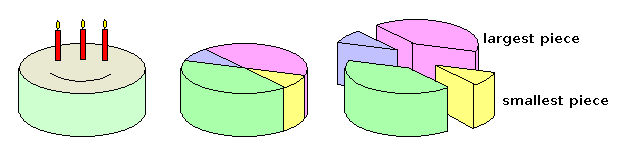
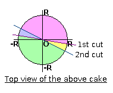

|
Problem C: Happy Birthday |
Today is Ray's birthday. Three of his friends, Jay, Kay and May, comes to his birthday party.
Ray has a very big birthday cake. The cake is basically a circular cylinder with radius R and height h. Ray makes two vertical cuts and divides the cake into four pieces. Ray gets the largest piece of cake, and May, who is currently on diet, takes the smallest piece.

Write a program to compute the volumes of the two pieces of cake.

Input contains several test cases. The first line of each case gives R and h, and each of the next two lines specifies a cut performed.
Consider the top view of the cake. We may look at it as a circle of radius R, centred at the origin (0, 0). A cut is specified by two points (not necessarily on the boundary of the cake) on a straight line. The two cuts may or may not pass through the center, but they always produce exactly 4 pieces.
All input numbers are integers whose absolute values do not exceed 100. All four pieces of cake have positive volumes.
For each test case, output a line containing the volume of the Ray's piece of cake followed by that of May's piece, correct to 2 decimal places.
10 5 -10 0 10 0 -6 8 6 -8
553.57 231.82